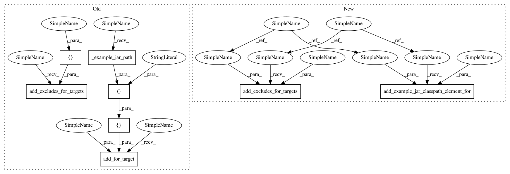

3a93428ee521eb792384d300324184fff522fcb4,tests/python/pants_test/backend/jvm/tasks/test_classpath_products.py,ClasspathProductsTest,test_jar_provided_by_transitive_target_excluded,#ClasspathProductsTest#,154
Before Change
root = self.make_target("root", JvmTarget, dependencies=[provider, consumer])
classpath_product = ClasspathProducts()
classpath_product.add_for_target(consumer, [("default", self._example_jar_path())])
classpath_product.add_excludes_for_targets([root, provider, consumer])
classpath = classpath_product.get_for_target(root)
self.assertEqual([], classpath)
After Change
self.assertEqual([], classpath)
def test_jar_provided_by_transitive_target_excluded(self):
provider = self.make_target("provider", ExportableJvmLibrary,
provides=Artifact("com.example", "lib", Repository()))
consumer = self.make_target("consumer", JvmTarget)
root = self.make_target("root", JvmTarget, dependencies=[provider, consumer])
classpath_product = ClasspathProducts()
self.add_example_jar_classpath_element_for(classpath_product, consumer)
self.add_excludes_for_targets(classpath_product, consumer, provider, root)
classpath = classpath_product.get_for_target(root)
self.assertEqual([], classpath)
In pattern: SUPERPATTERN
Frequency: 3
Non-data size: 8
Instances
Project Name: pantsbuild/pants
Commit Name: 3a93428ee521eb792384d300324184fff522fcb4
Time: 2015-09-01
Author: nhoward@twopensource.com
File Name: tests/python/pants_test/backend/jvm/tasks/test_classpath_products.py
Class Name: ClasspathProductsTest
Method Name: test_jar_provided_by_transitive_target_excluded
Project Name: pantsbuild/pants
Commit Name: 3a93428ee521eb792384d300324184fff522fcb4
Time: 2015-09-01
Author: nhoward@twopensource.com
File Name: tests/python/pants_test/backend/jvm/tasks/test_classpath_products.py
Class Name: ClasspathProductsTest
Method Name: test_jar_provided_exclude_with_similar_name
Project Name: pantsbuild/pants
Commit Name: 3a93428ee521eb792384d300324184fff522fcb4
Time: 2015-09-01
Author: nhoward@twopensource.com
File Name: tests/python/pants_test/backend/jvm/tasks/test_classpath_products.py
Class Name: ClasspathProductsTest
Method Name: test_jar_provided_exclude_with_similar_org